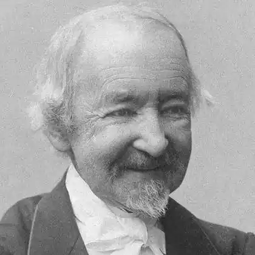
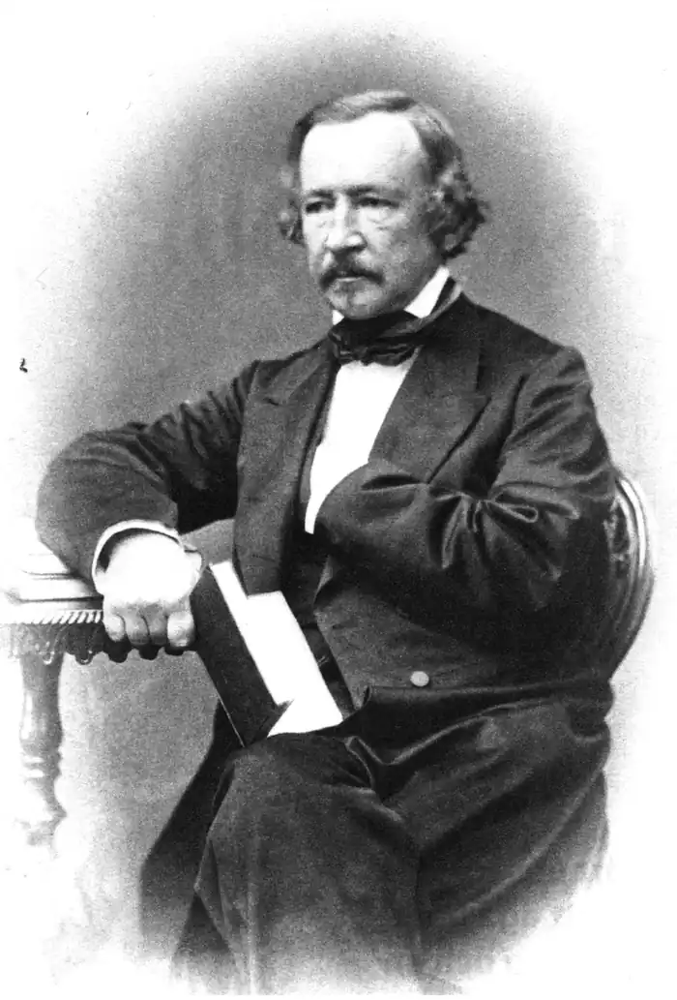

Народився 14 січня 1818 року в родині лікаря й відомого збирача народної поезії. Вже в дитинстві проявилися його художні здібності: багата уява, спостережливість, інтерес до таємничого і містичного. У віці одинадцяти років він був відправлений на навчання в школу в Улеаборге.
У 1833 році переїхав до Гельсінгфорс, де познайомився з Юханом Людвігом Рунеберг, що стояли на чолі фінського національно-патріотичного руху в 1830-х років. Гурток Рунеберга зробив сильний вплив на молодого Топеліус, зумовивши подальший розвиток його літературної і суспільно-політичної діяльності. У 1840 Топеліус закінчив Гельсінгфорський університет, в 1841 став головним редактором "Гельсінгфорський известий" (швед.Helsingfors Tidningar) і займав цю посаду аж до 1860.
Його публіцистика відрізнялася ліберальністю поглядів. У 1845 році вийшов перший з чотирьох збірок віршів Топеліус, "Квіти вересу". У 1847 році він став доктором історичних наук, ще через сім років — професором. Однак проросійська позиція Топеліуса в період Кримської війни відштовхнула від нього найбільш радикально налаштованих фінів. З 1873 по 1878 був ректором Гельсингфорського університету. У 1878 році залишив цю посаду, щоб цілком присвятити себе літературній праці. Був нагороджений Шведською академією золотою медаллю за літературні заслуги в 1886 році. Творчість Літературне творчість Топеліус дуже різноманітне. Його лірика глибоко патріотична, пронизана любов'ю до батьківщини і її природи ("Танення льоду на річці Улео", "Лісові пісні", "Зимова вулиця" тощо) У більш пізніх віршах Топеліус переважають релігійні мотиви. Крім того, Тобеліус знаменитий історичною прозою: романами, повістями та оповіданнями, в яких позначився вплив Вальтера Скотта, Віктора Гюго і датського романіста Б. С. Інгеманна. Опублікований в 1850 році роман Т. "Герцогиня Фінляндська" став першою спробою створення у фінській літературі великого національно-історичного роману. "Розповіді фельдшера"дають художній нарис про історію Фінляндії з часів Густава II Адольфа до Густава III. У 1879 році вийшов роман про часи шведської королеви Христини — "Діти зірок". З драматичних творів Топеліус широку популярність мали трагедія "Регіна фон Еммеріц" (1853) і драма "50 років потому" (1851), в основу яких були покладені епізоди з "Рассказов фельдшера". У Європі Топеліус відомий насамперед як автор казок "Sagor" (1847-1852). У більш ранніх з них відчувається деяке наслідування Андерсену, але потім він знаходить свій власний оригінальний стиль. Цікаві факти Топеліус підтримував ідею Трансконтинентальної магістралі через Берингову протоку (це відбито в його казці "Як коваль Пааво підкував поїзд", в іншому перекладі "Про те, як залізниця семимильні чоботи отримала") Саме Топеліус першим запропонував зробити білий і блакитний квітами прапора Фінляндії. Блакитний колір позначав озера (фін. j?rvet), а білий — снігу (фін. hanki).